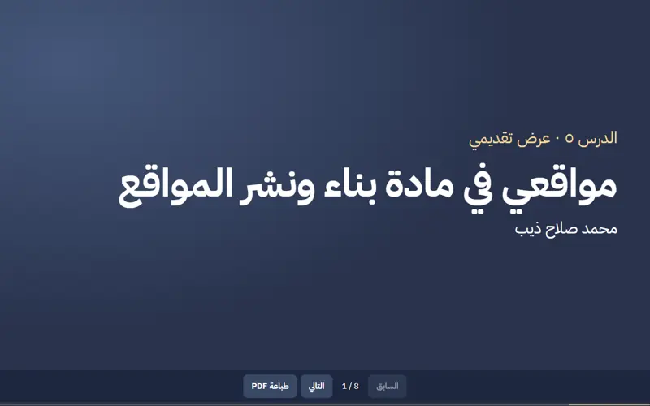
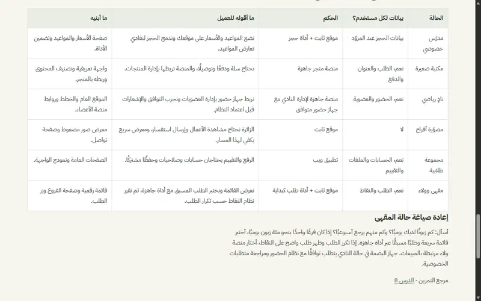
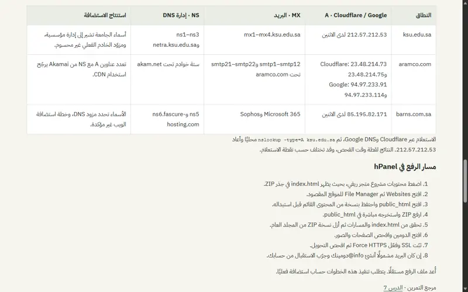

مشروع تدريبي
مشروع تدريبيعيادة أُنس للأسنان
كيف يتعرّف الزائر على الخدمات بسرعة؟ جمعت التعريف والخدمات والتواصل في صفحة عربية واحدة.
زيارة المشروعستة تطبيقات تربط التصميم والتطوير والنشر.
مشروع تدريبيكيف يتعرّف الزائر على الخدمات بسرعة؟ جمعت التعريف والخدمات والتواصل في صفحة عربية واحدة.
زيارة المشروع مشروع تدريبي
مشروع تدريبيكيف أشارك معلوماتي برابط واحد؟ فصلت الهيكل والتنسيق والسلوك ووضعت التواصل في قسم واضح.
زيارة المشروع مشروع تدريبي
مشروع تدريبيكيف يتصفح الزائر أقسام المتجر؟ بنيت أربع صفحات مترابطة بزر تواصل ثابت.
زيارة المشروع
مشروع تدريبيكيف أقدم المواقع أمام الفصل؟ جمعت نتائجها في ثماني شرائح قابلة للطباعة.
زيارة المشروع
مشروع تدريبيكيف أختار التقنية المناسبة للعميل؟ قارنت ست حالات وكتبت قرارًا مبررًا لكل حالة.
زيارة المشروع
مشروع تدريبيكيف أميز بين توجيه الموقع والبريد؟ قارنت سجلات ثلاثة نطاقات عبر محللين مختلفين.
زيارة المشروع